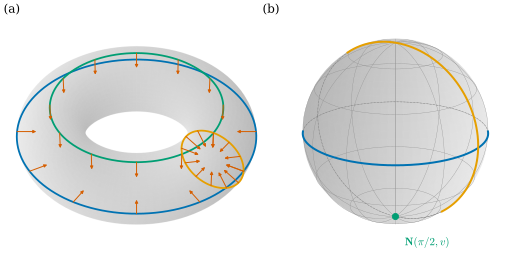
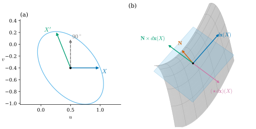
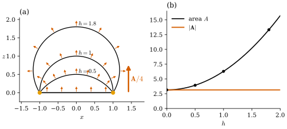

38.3 The Gauss Map and Vector-Valued Forms
Goals
- Gauss map \(\mathbf{N}\)을 \(S^2\)에 값을 갖는 \(\R^3\)-valued 0-form으로 보고, \(\inner{\mathbf{N}}{d\mathbf{x}} = 0\)과 “\(d\mathbf{N}(X)\)는 tangent”를 증명할 수 있다.
- 넓이와 normal을 함께 담는 등식 \(\mathbf{N}\,dA = \tfrac12\,d\mathbf{x}\wedge d\mathbf{x}\)를 증명하고 계산에 쓸 수 있다.
- \(\mathbf{N}\times d\mathbf{x}\)가 tangent vector를 \(+90^\circ\) 돌린다는 것과, 이 study set의 Hodge star로 \(\star d\mathbf{x} = -\mathbf{N}\times d\mathbf{x}\)임을 부호까지 확인할 수 있다.
- vector area를 정의하고, 그것이 boundary 곡선만으로 정해진다는 것을 Stokes's theorem으로 증명하며, closed surface에서 \(0\)임을 보일 수 있다.
Prerequisites
- Section 38.1–38.2: immersion Proposition 38.1.7, reparametrization Exercise 38.1.3, induced metric Proposition 38.2.2, Proposition 38.2.5.
- vector-valued form의 wedge Definition 35.5.12, (35.5.5), self-wedge Proposition 35.5.14, exterior derivative Proposition 35.5.16.
- Stokes's theorem Theorem 35.4.5, Corollary 35.4.11, fundamental theorem for line integrals Proposition 35.4.6.
- Hodge star Definition 34.2.5, on 1-forms Proposition 34.4.11, sphere의 tangent plane에서의 \(\star\) Example 34.5.8.
Motivation
Section 38.2의 induced metric은 surface를 “따라” 재는 도구였다. 길이와 각과 넓이는 tangent 방향만 본다. 그런데 surface가 공간에서 어떻게 굽어 있는지는 tangent plane에 수직인 방향, 곧 normal을 보아야 안다. 평면은 normal이 어디서나 같고, sphere는 normal이 점마다 다른 방향을 가리킨다.
이 절은 normal \(\mathbf{N}\)을 Chapter 35의 vector-valued form의 언어로 다룬다. 두 가지 놀라운 일이 생긴다. 첫째, 넓이 요소 \(dA\)와 normal \(\mathbf{N}\)이 \(\tfrac12\,d\mathbf{x}\wedge d\mathbf{x}\)라는 하나의 \(\R^3\)-valued 2-form으로 합쳐진다. 둘째, 이 2-form은 exact이므로 그 적분인 vector area는 Stokes's theorem에 의해 boundary 곡선만으로 정해진다. 이것이 Section 38.5에서 mesh의 vertex normal을 정의하는 출발점이 된다.
The Gauss Map
Definition 38.3.1 (Gauss map). immersion \(\mathbf{x}\colon U \to \R^3\)에 대하여
를 \(\mathbf{x}\)의 Gauss map(가우스 사상)이라 한다(Definition 8.1.1, unit normal은 Definition 7.5.1). \(\mathbf{N}\)은 \(U\) 위의 \(\R^3\)-valued 0-form이고, 그 값이 언제나 unit sphere \(S^2\) 위에 있다.
분모가 \(0\)이 아닌 것이 immersion 조건이다(Proposition 38.1.7). 정의는 좌표의 순서에 의존한다. \(u\)와 \(v\)를 바꾸면 \(\mathbf{N}\)의 부호가 바뀌고, 일반적으로 reparametrization \(\mathbf{x}\circ h\)의 Gauss map은 \(\sgn(\det Dh)\,\mathbf{N}\circ h\)이다(Exercise 38.1.3). surface 전체에서 \(\mathbf{N}\)을 연속으로 고를 수 있는 것이 orientable이라는 것이다(Definition 7.5.4) [Cr §3.1].
Example 38.3.2 (Gauss maps of the running examples). Example 7.5.2의 계산을 그대로 쓴다. sphere는 \(\mathbf{N} = \mathbf{x}/r\)(바깥쪽), cylinder는 \(\mathbf{N} = (\cos u, \sin u, 0)\)(바깥쪽), saddle의 graph parametrization은 \(\mathbf{N} = (-2u, 2v, 1)/\sqrt{1 + 4u^2 + 4v^2}\)(위쪽)이다. torus of revolution은
로 관의 중심원 쪽, 곧 안쪽을 향한다(running example, Notation and Conventions). Section 38.2의 stereographic coordinates는 안쪽, Mercator coordinates는 바깥쪽이었다(Example 38.2.9, Example 38.2.10).
Proposition 38.3.3 (the normal and its differential). \(\mathbf{x}\colon U \to \R^3\)이 immersion이고 \(\mathbf{N}\)이 그 Gauss map이라 하자. inner product로 만든 wedge(Definition 35.5.12)를 0-form과 1-form 사이에 쓰면
이다. 곧 모든 \(X\)에 대하여 \(d\mathbf{x}(X)\)와 \(d\mathbf{N}(X)\)는 모두 \(\mathbf{N}\)에 수직이다. 따라서 \(d\mathbf{N}_q(X)\)는 \(d\mathbf{x}_q\)의 image(tangent plane)에 들어 있다.
Proof. 첫 등식: \(d\mathbf{x}(X) = X^1\mathbf{x}_u + X^2\mathbf{x}_v\)이고 \(\mathbf{x}_u\times\mathbf{x}_v\)는 \(\mathbf{x}_u\)와 \(\mathbf{x}_v\)에 수직이다(Theorem 1.6.16). 둘째 등식: 함수 \(\inner{\mathbf{N}}{\mathbf{N}} = \sum_a(\mathbf{N}^a)^2\)는 상수 \(1\)이므로 그 differential은 \(0\)이다. product rule을 성분마다 쓰면(Proposition 35.5.16(b)에서 \(k = 0\)) \(0 = d\inner{\mathbf{N}}{\mathbf{N}} = 2\sum_a\mathbf{N}^a\,d\mathbf{N}^a = 2\inner{\mathbf{N}}{d\mathbf{N}}\)이다. 마지막 문장: \(d\mathbf{x}_q\)의 image는 2차원이고(immersion) 첫 등식에 의해 \(\mathbf{N}(q)^\perp\) 안에 있으며 \(\mathbf{N}(q)^\perp\)도 2차원이므로 둘은 같다. 둘째 등식에 의해 \(d\mathbf{N}_q(X) \in \mathbf{N}(q)^\perp\)이다.
둘째 등식은 “unit vector는 길이가 바뀌지 않으므로 방향만 바뀐다”는 말이다. 그래서 \(d\mathbf{N}\)은 \(\R^3\)-valued 1-form이면서 값이 언제나 tangent plane에 있다. normal이 tangent 방향으로 얼마나 빨리 기우는가가 surface의 휘어짐이고, 그것을 숫자로 바꾸는 것이 Chapter 39의 일이다 [Cr §3.1]. Track 3의 Proposition 8.1.4가 같은 사실이다.
Example 38.3.4 (the differential of the Gauss map). (a) sphere에서 \(\mathbf{N} = \mathbf{x}/r\)이므로 \(d\mathbf{N} = \tfrac1r\,d\mathbf{x}\)이다. normal이 정확히 \(\mathbf{x}\)와 같은 비율로 움직인다.
(b) torus of revolution에서 (38.3.2)를 미분하고 (38.1.2)의 \(\mathbf{x}_u, \mathbf{x}_v\)와 비교하면
이다. 두 coefficient가 \(\mathbf{x}_u\)와 \(\mathbf{x}_v\)의 배수이므로 값이 tangent plane에 있다(Proposition 38.3.3). \(u = \pm\pi/2\)(관의 꼭대기와 바닥의 원)에서는 \(\cos u = 0\)이라 \(d\mathbf{N}(\partial_v) = 0\)이다. 그 원을 따라가면 normal이 전혀 변하지 않는다. 이 coefficient들을 curvature로 읽는 것은 Chapter 39의 몫이다.
Verification: verify/v-38-3-gauss-map-forms.py
Figure 38.3.1로 \(\mathbf{N}\)을 \(S^2\)로 가는 map으로 보자. 왼쪽 (a)의 torus에 세 coordinate curve가 있다. 파랑은 바깥 적도(\(u = 0\)), 초록은 꼭대기 원(\(u = \pi/2\)), 주황은 meridian(\(v = 0\))이고, 주홍 화살표가 그 위의 \(\mathbf{N}\)이다(안쪽). 오른쪽 (b)는 각 곡선의 \(\mathbf{N}\)-image다. 파란 바깥 적도는 \(S^2\)의 적도를 한 바퀴 돌고, 주황 meridian은 great circle을 한 바퀴 돈다. 초록 꼭대기 원은 원 전체가 남극 한 점으로 간다. (a)에서 초록 원 위의 화살표가 모두 아래를 향하는 것을 확인하자. (38.3.4)에서 그 원을 따라 \(d\mathbf{N}(\partial_v) = 0\)이었던 것이 바로 이것이다. 곧 \(\mathbf{N}\)은 \(\mathbf{x}\)와 달리 immersion이 아닐 수 있다.

The Area Normal \(\mathbf{N}\,dA = \tfrac12\,d\mathbf{x}\wedge d\mathbf{x}\)
orientation을 \(\mathbf{N}\)으로 정한 immersion에서, surface의 넓이를 재는 2-form은
이다. 이것을 area form(넓이 형식)이라 한다(넓이 요소는 Section 7.3, 일반적인 volume form은 Section 18.5). \((\partial_u, \partial_v)\)가 positively oriented인 inner product space \((\R^2, g_q)\)에서 \(dA\)는 \(\star 1\)이다(Proposition 34.5.7). \(\int_QdA\)가 Proposition 38.2.5(c)의 넓이다.
Proposition 38.3.5 (area normal). immersion \(\mathbf{x}\colon U \to \R^3\)과 그 Gauss map \(\mathbf{N}\)에 대하여, \(\R^3\)-valued 2-form으로
이다. 곧 모든 \(X, Y \in \R^2\)에 대하여 \(d\mathbf{x}(X)\times d\mathbf{x}(Y) = dA(X, Y)\,\mathbf{N}\)이다. 특히 \(dA = \tfrac12\inner{\mathbf{N}}{d\mathbf{x}\wedge d\mathbf{x}}\)이다.
Proof idea: 두 tangent vector의 cross product는 normal 방향이고 크기가 평행사변형의 넓이다. \(d\mathbf{x}\wedge d\mathbf{x}\)는 바로 그 cross product의 두 배다.
Proof. 두 변이 모두 \(\R^2\) 위의 \(\R^3\)-valued 2-form이고, 2차원에서 2-form은 \((\partial_u, \partial_v)\)에서의 값으로 정해진다. (35.5.6)에서 \(\tfrac12(d\mathbf{x}\wedge d\mathbf{x})(\partial_u, \partial_v) = \mathbf{x}_u\times\mathbf{x}_v\)이고, (38.3.1)에서 \(\mathbf{x}_u\times\mathbf{x}_v = \abs{\mathbf{x}_u\times\mathbf{x}_v}\,\mathbf{N}\)이며, Lagrange identity(Theorem 1.6.16)에서 \(\abs{\mathbf{x}_u\times\mathbf{x}_v} = \sqrt{EG - F^2} = dA(\partial_u, \partial_v)\)이다. 둘째 문장은 Proposition 35.5.14의 \((d\mathbf{x}\wedge d\mathbf{x})(X, Y) = 2\,d\mathbf{x}(X)\times d\mathbf{x}(Y)\)이다. 셋째 문장은 \(\inner{\mathbf{N}}{\mathbf{N}} = 1\)이다.
Example 35.5.15는 sphere에서 \(d\mathbf{x}\wedge d\mathbf{x} = 2r^2\sin\theta\,\mathbf{N}\,d\theta\wedge d\varphi\)를 계산했다. (38.3.6)은 그것을 모든 immersion으로 넓힌 것이다. torus of revolution에서는 \(\mathbf{x}_u\times\mathbf{x}_v = r(R + r\cos u)\,\mathbf{N}\)(\(\mathbf{N}\)은 안쪽)이므로 \(\mathbf{N}\,dA = r(R + r\cos u)\,\mathbf{N}\,du\wedge dv\)이고, 바깥쪽 normal로 쓰면 Exercise 35.5.4의 \(-2r(R + r\cos u)\,\mathbf{N}_{\mathrm{out}}\,du\wedge dv\)의 절반이다. 부호는 parametrization의 orientation을 기록할 뿐 넓이는 같다.
\(\mathbf{N}\,dA\)를 이렇게 쓰는 이점은 둘이다. normal을 정규화(나눗셈)하지 않고 \(d\mathbf{x}\)만으로 계산할 수 있다. 그리고 \(d\mathbf{x}\wedge d\mathbf{x}\)는 exterior derivative를 가진 대상이라 Stokes's theorem을 쓸 수 있다. 뒤의 것이 이 절의 후반부다.
Rotation by the Normal and the Hodge Star
\(\R^3\)에서 unit vector \(\mathbf{N}\)과의 cross product \(w \mapsto \mathbf{N}\times w\)는 \(\mathbf{N}^\perp\) 안의 vector를 \(\mathbf{N}\) 둘레로 \(+90^\circ\)(\(\mathbf{N}\) 쪽에서 보아 반시계 방향) 돌린다. 이것을 tangent vector \(d\mathbf{x}(X)\)에 쓰면 무엇이 되는가? parameter 평면에서 무엇을 돌린 것인가?
Proposition 38.3.6 (the normal rotates tangent vectors). immersion \(\mathbf{x}\)와 \(q \in U\)에 대하여 \(\R^2\)에 inner product \(g_q\)와 \((\partial_u, \partial_v)\)가 정하는 orientation을 주자. \(X \in \R^2\)에 대하여 \(X'\)을 \(g_q\)에 대해 \(X\)를 \(+90^\circ\) 돌린 vector, 곧 \(g_q(X', X') = g_q(X, X)\), \(g_q(X, X') = 0\)이고 (\(X \neq 0\)이면) \((X, X')\)이 positively oriented인 vector라 하자(\(0' = 0\)).
- (a) \(d\mathbf{x}_q(X') = \mathbf{N}\times d\mathbf{x}_q(X)\)이다.
- (b) inner product space \((\R^2, g_q)\)의 Hodge star(Definition 34.2.5, 1-form에서는 Proposition 34.4.11)는 1-form \(\alpha\)에 대하여 \((\star\alpha)(X) = -\alpha(X')\)이다. 따라서 성분마다 쓰면
Proof idea: \(g_q\)에 대한 orthonormal basis를 \(d\mathbf{x}\)로 보내면 tangent plane의 orthonormal basis가 되고, 둘 다 같은 orientation이므로 \(+90^\circ\) 회전끼리 대응한다.
Proof. \((e_1, e_2)\)를 \((\R^2, g_q)\)의 positively oriented orthonormal basis라 하자. \(X \mapsto X'\)은 linear이고(\(g_q\)에 대한 회전) \(e_1' = e_2\), \(e_2' = -e_1\)이다. \(a = d\mathbf{x}(e_1)\), \(b = d\mathbf{x}(e_2)\)는 \(g\)의 정의에 의해 \(\R^3\)의 orthonormal vector이고, Exercise 38.1.3(a)와 같은 계산으로 \(a\times b = \det[e_1\ e_2]\,\mathbf{x}_u\times\mathbf{x}_v\)이다. \((e_1, e_2)\)가 positively oriented이므로 \(\det[e_1\ e_2] \gt 0\)이고, \(\abs{a\times b} = 1\)이므로 \(a\times b = \mathbf{N}\)이다. 그러면 \((a, b, \mathbf{N})\)은 positively oriented orthonormal basis이고 \(\mathbf{N}\times a = b\), \(\mathbf{N}\times b = -a\)이다(\(e_3\times e_1 = e_2\), \(e_3\times e_2 = -e_1\)과 같은 관계, Proposition 1.6.17).
(a) \(d\mathbf{x}(e_1') = d\mathbf{x}(e_2) = b = \mathbf{N}\times a\), \(d\mathbf{x}(e_2') = -a = \mathbf{N}\times b\)이므로 basis에서 성립하고, 양변이 \(X\)에 대해 linear이므로 모든 \(X\)에서 성립한다. (b) dual basis \((e^1, e^2)\)는 positively oriented orthonormal coframe이므로 \(\star e^1 = e^2\), \(\star e^2 = -e^1\)이다(Example 34.4.12(a)). 한편 \(-e^1(e_1') = -e^1(e_2) = 0 = e^2(e_1)\), \(-e^1(e_2') = e^1(e_1) = 1 = e^2(e_2)\)이므로 \(\star e^1 = -e^1(\cdot\,')\)이고, 같은 방법으로 \(\star e^2 = -e^2(\cdot\,')\)이다. 따라서 linearity로 모든 1-form에서 \((\star\alpha)(X) = -\alpha(X')\)이다. \(\alpha\)를 \(d\mathbf{x}\)의 성분 \(d\mathbf{x}^a\)로 두고 (a)를 쓰면 \((\star d\mathbf{x})(X) = -d\mathbf{x}(X') = -\mathbf{N}\times d\mathbf{x}(X)\)이다.
(a)는 convention과 무관한 기하적 사실이다. \(X'\)은 parameter 평면의 유클리드 \(+90^\circ\) 회전이 아니라 \(g_q\)에 대한 회전이다. 곧 parameter 평면에서는 회전처럼 보이지 않아도 \(d\mathbf{x}\)로 옮기면 tangent plane의 진짜 \(90^\circ\) 회전이 된다. 이 map \(X \mapsto X'\)을 \(\mathbf{x}\)가 유도하는 complex structure \(J\)라 부르며 Definition 43.3.1에서 정의한다. (b)의 부호는 Hodge star의 convention에 달려 있다(아래 Conventions 상자).
Figure 38.3.2은 saddle의 점 \(q = (0.5, -0.4)\)에서 이것을 보인다. 왼쪽 (a)는 parameter 평면이다. 파란 \(X = (1, 0)\)을 유클리드 \(+90^\circ\) 돌리면 회색 점선 \((0, 1)\)이지만, \(g_q = \begin{pmatrix} 2 & 0.8 \\ 0.8 & 1.64 \end{pmatrix}\)에 대해 돌린 초록 \(X'\)은 왼쪽으로 기울어 있고 길이도 다르다. 하늘색 타원은 \(g_q\)-길이가 \(X\)와 같은 vector들의 끝점이고, \(X'\)도 그 위에 있다. 오른쪽 (b)는 같은 것을 surface 위에서 본 것이다. tangent plane(하늘색) 안에서 초록 \(\mathbf{N}\times d\mathbf{x}(X)\)는 파란 \(d\mathbf{x}(X)\)를 주홍 \(\mathbf{N}\) 둘레로 \(90^\circ\) 돌린 것이고, 그것이 정확히 \(d\mathbf{x}(X')\)이다. 자주색 화살표 \((\star d\mathbf{x})(X)\)는 그 반대 방향이다.

Example 38.3.7 (the sphere). sphere의 \((\theta, \varphi)\)에서 \(\star d\theta = \sin\theta\,d\varphi\), \(\star d\varphi = -d\theta/\sin\theta\)였다(Example 34.5.8). 따라서
\[ \star d\mathbf{x} = \mathbf{x}_\theta\,\star d\theta + \mathbf{x}_\varphi\,\star d\varphi = \sin\theta\,\mathbf{x}_\theta\,d\varphi - \frac{1}{\sin\theta}\,\mathbf{x}_\varphi\,d\theta \]
이다. 한편 \(\mathbf{N} = \mathbf{x}/r\), \(\mathbf{x}_\theta/r\), \(\mathbf{x}_\varphi/(r\sin\theta)\)는 orthonormal이고 \(\mathbf{N} = (\mathbf{x}_\theta/r)\times(\mathbf{x}_\varphi/(r\sin\theta))\)이므로 \(\mathbf{N}\times\mathbf{x}_\theta = \mathbf{x}_\varphi/\sin\theta\), \(\mathbf{N}\times\mathbf{x}_\varphi = -\sin\theta\,\mathbf{x}_\theta\)이다. 그러면 \(-\mathbf{N}\times d\mathbf{x} = -\tfrac{1}{\sin\theta}\mathbf{x}_\varphi\,d\theta + \sin\theta\,\mathbf{x}_\theta\,d\varphi\)이고, 위의 \(\star d\mathbf{x}\)와 같다. 곧 (38.3.7)이 성립한다. 이 예에서 \(\partial_\theta' = \partial_\varphi/\sin\theta\)다. parameter 평면에서 \(\partial_\varphi\) 방향이지만 길이가 \(1/\sin\theta\)배다.
Verification: verify/v-38-3-gauss-map-forms.py
Vector Area
(38.3.6)을 적분하면 vector가 하나 나온다. surface patch의 모든 normal을 넓이로 가중해 더한 것이다 [Cr §5.1].
Definition 38.3.8 (vector area). (a) \(\mathbf{x}\)가 domain of integration \(D \subseteq U\)의 closure를 포함하는 open set에서 smooth이면
를 surface patch \(\mathbf{x}|_D\)의 vector area(벡터 넓이)라 한다. 적분은 성분마다 하고(Definition 35.3.1), 첫 번째 적분은 \(\mathbf{x}\)가 immersion인 점들 위의 적분으로 읽는다(두 적분은 Proposition 38.3.5에 의해 거기서 같다). (b) 닫힌 piecewise \(C^1\) 곡선 \(c\colon [a, b] \to \R^3\)(\(c(a) = c(b)\))에 대하여
를 곡선의 vector area라 한다.
굵은 \(\mathbf{A}\)는 vector이고 이탤릭 \(A\)는 넓이(수)다. 평면에 놓인 조각에서는 \(\mathbf{N}\)이 상수라 \(\mathbf{A} = A\,\mathbf{N}\)이다. 휘어 있으면 서로 다른 방향의 normal이 일부 상쇄되어 \(\abs{\mathbf{A}} \le A\)가 된다(삼각 부등식, 등호는 \(\mathbf{N}\)이 상수일 때).
Non-example 38.3.9 (vector area is not area). (a) sphere 전체의 넓이는 \(4\pi r^2\)이지만 vector area는 \(0\)이다(Corollary 38.3.12). (b) 평면의 figure-eight curve \(c(t) = (\sin t, \sin t\cos t, 0)\), \(t \in [0, 2\pi]\)는 두 고리가 서로 반대 방향으로 돌므로 \(\mathbf{A}(c)\)의 \(z\) 성분 \(\tfrac12\int_0^{2\pi}(xy' - yx')\,dt = -\tfrac12\int_0^{2\pi}\sin^3t\,dt = 0\)이다. 곡선이 넓이를 둘러싸지만 vector area는 signed area라서 상쇄된다.
Proposition 38.3.10 (vector area of a closed curve). 닫힌 piecewise \(C^1\) 곡선 \(c\)에 대하여 다음이 성립한다.
- (a) translate해도 변하지 않는다: \(\mathbf{A}(c + p) = \mathbf{A}(c)\).
- (b) 방향을 보존하는 reparametrization에서는 변하지 않고, 방향을 뒤집으면 부호가 바뀐다.
- (c) unit vector \(\mathbf{e}\)에 대하여 \(\inner{\mathbf{A}(c)}{\mathbf{e}}\)는 \(c\)를 \(\mathbf{e}^\perp\)에 정사영한 plane curve의 signed area(Definition 5.7.1, \(\mathbf{e}\) 쪽에서 보아 반시계 방향이 양수)다.
- (d) vertex가 차례로 \(p_0, \dots, p_{m-1}\)인 닫힌 다각형에서는 \(\mathbf{A} = \tfrac12\sum_{k=0}^{m-1}p_k\times p_{k+1}\)(\(p_m = p_0\))이다.
Proof. (a) \(\tfrac12\oint(c + p)\times dc = \mathbf{A}(c) + \tfrac12\,p\times\oint dc\)이고 \(\oint dc = c(b) - c(a) = 0\)이다(Proposition 35.4.6를 성분마다). (b) 변수변환이다. \(\tilde c = c\circ\sigma\)이면 \(\tilde c\times\tilde c' = (c\times c')\circ\sigma\cdot\sigma'\)이다. (c) \((\mathbf{e}_1, \mathbf{e}_2, \mathbf{e})\)가 positively oriented orthonormal basis가 되도록 좌표를 잡고 \(c = x\mathbf{e}_1 + y\mathbf{e}_2 + z\mathbf{e}\)라 쓰면 \(\inner{c\times c'}{\mathbf{e}} = xy' - yx'\)이므로 \(\inner{\mathbf{A}}{\mathbf{e}} = \tfrac12\int(xy' - yx')\,ds\)이고, 이것이 정사영 \((x, y)\)의 signed area다. (d) 선분 \(c(s) = p + s(q - p)\), \(s \in [0, 1]\)에서 \(\int_0^1(p + s(q - p))\times(q - p)\,ds\) \(= p\times(q - p) + \tfrac12(q - p)\times(q - p)\) \(= p\times q\)이다. 모든 변에서 더한다.
이제 이 절의 중심 정리다. surface patch의 vector area는 boundary 곡선의 vector area와 같다. surface가 boundary 안쪽에서 어떻게 생겼는지는 상관이 없다. 노트는 이 사실을 연습문제로 남겨 둔다 [Cr §5.1]. 여기서는 Chapter 35의 도구로 증명한다.
Theorem 38.3.11 (vector area depends only on the boundary). \(D \subseteq \R^2\)가 rectangle, triangle, 또는 boundary가 smooth compact 영역이고 \(\mathbf{x}\)가 \(\overline D\)를 포함하는 open set에서 smooth라 하자. \(\partial D\)에 Stokes orientation(반시계 방향)을 주고 \(c = \mathbf{x}\circ\partial D\)라 하면
이다. 여기서 \(\mathbf{x}\wedge d\mathbf{x}\)는 값이 \(\mathbf{x}\times d\mathbf{x}(X)\)인 \(\R^3\)-valued 1-form이다.
Proof idea: \(d\mathbf{x}\wedge d\mathbf{x}\)는 exact이고 그 “potential”이 \(\mathbf{x}\wedge d\mathbf{x}\)다. 그러면 Stokes's theorem이 넓이 적분을 boundary 적분으로 바꾼다.
Proof. Proposition 35.5.16(b)를 cross product \(B\), \(\alpha = \mathbf{x}\)(0-form, \(k = 0\)), \(\beta = d\mathbf{x}\)에 쓰면 \(d(\mathbf{x}\wedge d\mathbf{x}) = d\mathbf{x}\wedge d\mathbf{x} + \mathbf{x}\wedge d(d\mathbf{x})\)이고, (c)에서 \(d(d\mathbf{x}) = 0\)이므로
\[ d(\mathbf{x}\wedge d\mathbf{x}) = d\mathbf{x}\wedge d\mathbf{x} \]
이다. 세 성분 각각에 Stokes's theorem(\(D\)가 rectangle이나 triangle이면 Corollary 35.4.11, smooth boundary면 Theorem 35.4.5를 \(\R^2\)의 영역 \(D\)에)을 쓰면 \(\int_Dd\mathbf{x}\wedge d\mathbf{x} = \oint_{\partial D}\mathbf{x}\wedge d\mathbf{x}\)이다. \(\partial D\)를 \(\gamma\colon [a, b] \to \R^2\)로 parametrize하면 오른쪽은 \(\int_a^b\mathbf{x}(\gamma)\times d\mathbf{x}(\gamma')\,ds = \int_a^bc\times c'\,ds\)(\(c = \mathbf{x}\circ\gamma\), chain rule)이므로 \(2\mathbf{A}(c)\)이다. 첫 등식은 정의 (38.3.8)이다.
증명에 immersion 조건이 쓰이지 않은 데 주의하자. (38.3.10)의 둘째 등식은 \(\mathbf{x}\)가 smooth이기만 하면 성립한다. 그래서 극에서 immersion이 아닌 sphere의 표준 parametrization도 그대로 쓸 수 있다.
Corollary 38.3.12 (same boundary, same vector area; closed surfaces). (a) Theorem 38.3.11의 두 조각 \((\mathbf{x}_1, D_1)\), \((\mathbf{x}_2, D_2)\)의 boundary가 같은 방향의 같은 closed curve(reparametrization을 빼고)이면 vector area가 같다. (b) sphere와 torus of revolution의 vector area는 \(0\)이다. (c) 더 일반적으로, 바깥쪽 normal로 orientation을 준 compact surface \(S\)가 영역 \(\Omega\)를 둘러싸고 divergence theorem(Proposition 35.4.12(c))을 쓸 수 있으면 \(\int_S\mathbf{N}\,dA = 0\)이다.
Proof. (a) (38.3.10)과 Proposition 38.3.10(b). (b) sphere를 \(D = [0, \pi]\times[0, 2\pi]\) 위의 표준 parametrization으로 덮자(빠진 반원은 넓이가 \(0\)이다). \(\partial D\)의 네 변 가운데 \(\theta = 0\)과 \(\theta = \pi\)는 극 한 점으로 가므로 \(d\mathbf{x}\)의 그 변 방향 성분이 \(0\)이고 적분에 기여하지 않는다. \(\varphi = 0\)과 \(\varphi = 2\pi\)는 같은 meridian을 반대 방향으로 지나므로 상쇄된다. torus는 \(D = [0, 2\pi]^2\)에서 마주 보는 변이 같은 곡선을 반대 방향으로 지나므로 네 변이 둘씩 상쇄된다. (c) 상수 vector \(\mathbf{e}\)에 대하여 \(\inner{\int_S\mathbf{N}\,dA}{\mathbf{e}} = \int_S\inner{\mathbf{e}}{\mathbf{N}}\,dA\) \(= \int_\Omega\divg\mathbf{e}\,dV = 0\)이다.
Example 38.3.13 (vector areas of the running examples). (a) (polar cap) sphere를 \(D = [0, \theta_0]\times[0, 2\pi]\)에서 보자. \(\partial D\) 가운데 \(\theta = \theta_0\)인 변만 남고(나머지는 (b)의 증명처럼 사라지거나 상쇄된다), 그것은 circle of latitude \(c(\varphi) = (a\cos\varphi, a\sin\varphi, b)\), \(a = r\sin\theta_0\), \(b = r\cos\theta_0\)을 반시계 방향으로 지난다. \(c\times c' = (-ab\cos\varphi,\ -ab\sin\varphi,\ a^2)\)이므로
이다. 넓이는 \(2\pi r^2(1 - \cos\theta_0)\)(Example 7.3.10(c))이므로 \(\abs{\mathbf{A}}/A = (1 + \cos\theta_0)/2\)이고, 작은 cap에서는 \(1\)에 가깝고 hemisphere(\(\theta_0 = \pi/2\))에서는 \(\tfrac12\)이다. hemisphere의 \(\pi r^2\mathbf{e}_3\)은 Example 35.3.10(b)에서 그림자의 넓이로 구한 \(z\) 성분과 같다.
(b) (saddle) graph parametrization을 반지름 \(a\)인 disk 위에서 보면 \(\mathbf{N}\,dA = \mathbf{x}_u\times\mathbf{x}_v\,du\wedge dv\) \(= (-2u, 2v, 1)\,du\wedge dv\)이고, disk에서 \(u\)와 \(v\)의 적분은 \(0\)이므로 \(\mathbf{A} = \pi a^2\mathbf{e}_3\)이다. boundary \(c(t) = (a\cos t, a\sin t, a^2\cos 2t)\)로 계산해도 \(c\times c'\)의 \(x, y\) 성분은 \(\sin t\sin 2t\), \(\cos 2t\cos t\) 같은 항이라 한 주기 적분이 \(0\)이고 \(z\) 성분은 \(a^2\)이므로 같은 값이 나온다. saddle 조각은 휘어 있지만 vector area는 같은 boundary를 갖는 평면 disk와 같다.
(c) (torus) 전체는 \(0\)이다(Corollary 38.3.12(b)). 위쪽 절반 \(D = [0, \pi]\times[0, 2\pi]\)은 \(\mathbf{N}\)이 안쪽이고 \(dA = r(R + r\cos u)\,du\,dv\)이므로 \(z\) 성분이 \(-\int_0^{2\pi}\!\int_0^\pi\sin u\cdot r(R + r\cos u)\,du\,dv\) \(= -4\pi Rr\)이고, \(x, y\) 성분은 \(v\) 적분에서 \(0\)이다. 곧 \(\mathbf{A} = -4\pi Rr\,\mathbf{e}_3\)이다. 바깥쪽 normal로 쓰면 \(+4\pi Rr\,\mathbf{e}_3\)이고, 이것은 위쪽 절반의 그림자인 annulus \(R - r \le \rho \le R + r\)의 넓이 \(\pi((R + r)^2 - (R - r)^2) = 4\pi Rr\)와 같다(Exercise 38.3.3).
Verification: verify/v-38-3-gauss-map-forms.py
Figure 38.3.3는 Corollary 38.3.12(a)를 보인다. 왼쪽 (a)는 \(xz\) 평면의 cross-section이다. 주황 점 \((\pm1, 0)\)이 공통 boundary인 단위원이고, 그 위에 높이 \(h = 0\)(평평한 disk), \(0.5\), \(1\)(hemisphere), \(1.8\)인 spherical cap이 있다. 주홍 화살표는 각 cap의 normal로, \(h\)가 커지면 옆과 아래를 향하는 normal이 많아진다. 오른쪽 (b)에서 검은 곡선(넓이 \(\pi(1 + h^2)\))은 \(h\)와 함께 커지지만 주홍 수평선(\(\abs{\mathbf{A}} = \pi\))은 그대로다. 옆으로 향한 normal들은 서로 상쇄되고, 아래로 향한 것들은 위로 향한 것들 일부를 지운다. 남는 것은 언제나 boundary가 둘러싼 disk의 넓이다.

Summary
- Gauss map \(\mathbf{N} = \mathbf{x}_u\times\mathbf{x}_v/\abs{\mathbf{x}_u\times\mathbf{x}_v}\)은 \(S^2\)에 값을 갖는 0-form이고, \(\inner{\mathbf{N}}{d\mathbf{x}} = 0\), \(\inner{\mathbf{N}}{d\mathbf{N}} = 0\)이다. 따라서 \(d\mathbf{N}\)의 값은 tangent plane에 있다(Proposition 38.3.3).
- area form과 normal은 \(\mathbf{N}\,dA = \tfrac12\,d\mathbf{x}\wedge d\mathbf{x}\)로 합쳐진다(Proposition 38.3.5).
- \(\mathbf{N}\times d\mathbf{x}(X) = d\mathbf{x}(X')\)이고, \(X'\)은 induced metric에 대한 \(+90^\circ\) 회전이다. 이 study set의 Hodge star로는 \(\star d\mathbf{x} = -\mathbf{N}\times d\mathbf{x}\)이고, Crane의 convention에서는 부호가 반대다(Proposition 38.3.6).
- vector area \(\int\mathbf{N}\,dA\)는 \(d(\mathbf{x}\wedge d\mathbf{x}) = d\mathbf{x}\wedge d\mathbf{x}\)와 Stokes's theorem에 의해 boundary 곡선의 \(\tfrac12\oint c\times dc\)와 같고, closed surface에서는 \(0\)이다(Theorem 38.3.11, Corollary 38.3.12).
지금까지는 smooth한 \(\mathbf{x}\)를 다뤘다. 다음 절에서는 triangle mesh로 넘어간다. Chapter 33의 simplicial surface에 vertex 좌표를 주어 map을 만들고, 그 discrete differential이 edge vector임을 보인 뒤, mesh에서 “immersion”이 무엇이어야 하는지 정한다.
Exercises
Exercise 38.3.1 ★ cylinder \(\mathbf{x}(u, v) = (r\cos u, r\sin u, v)\)에서 \(d\mathbf{N}\)을 구하고 그 값이 tangent임을 확인하여라. half-cylinder \(D = [0, \pi]\times[0, h]\)의 vector area를 구하고, 그것이 \(y\)축에 수직인 평면에 정사영한 그림자의 넓이와 어떻게 관계되는지 말하여라.
Solution
\(\mathbf{N} = (\cos u, \sin u, 0)\)이므로 \(d\mathbf{N} = (-\sin u, \cos u, 0)\,du = \tfrac1r\mathbf{x}_u\,du\)이고 \(\mathbf{x}_u\)의 배수이므로 tangent다. \(v\) 방향으로는 normal이 변하지 않는다. \(dA = r\,du\,dv\)이므로 \(\mathbf{A} = \int_0^h\!\int_0^\pi r(\cos u, \sin u, 0)\,du\,dv\) \(= rh(0, 2, 0) = (0, 2rh, 0)\)이다. half-cylinder를 \(xz\) 평면에 정사영하면 \([-r, r]\times[0, h]\)이고 넓이가 \(2rh\)이다. Proposition 38.3.10(c)와 Theorem 38.3.11에 의해 \(\inner{\mathbf{A}}{\mathbf{e}_2}\)는 boundary를 \(\mathbf{e}_2^\perp\)에 정사영한 곡선의 signed area이고, 그 곡선이 이 직사각형의 둘레다.
Exercise 38.3.2 ★ \(\R^3\)의 triangle의 vertex가 \(p, q, s\)일 때, 닫힌 다각형 \(p \to q \to s \to p\)의 vector area가 \(\tfrac12(q - p)\times(s - p)\)임을 보여라. 이 vector의 크기와 방향은 무엇인가?
Solution
Proposition 38.3.10(d)에서 \(\mathbf{A} = \tfrac12(p\times q + q\times s + s\times p)\)이다. 한편 \((q - p)\times(s - p)\) \(= q\times s - q\times p - p\times s + p\times p\) \(= q\times s + p\times q + s\times p\)이다. 따라서 둘이 같다. 크기는 triangle 넓이 \(A\)이고(Theorem 1.6.16), 방향은 \(p \to q \to s\)가 반시계 방향으로 보이는 쪽의 unit normal \(\mathbf{N}\)이다. 곧 \(\mathbf{A} = A\,\mathbf{N}\)이고, 평평한 triangle에서 \(\int\mathbf{N}\,dA\)와 같다.
Exercise 38.3.3 ★★ torus of revolution의 위쪽 절반 \(D = [0, \pi]\times[0, 2\pi]\)(running example의 parametrization, \(\mathbf{N}\)은 안쪽)의 vector area를 (38.3.10)의 boundary 적분으로 계산하여 Example 38.3.13(c)의 \(-4\pi Rr\,\mathbf{e}_3\)와 같음을 확인하여라.
Solution
\(\partial D\)를 반시계 방향으로 돌면 \(v = 0\)(\(u\): \(0 \to \pi\)), \(u = \pi\)(\(v\): \(0 \to 2\pi\)), \(v = 2\pi\)(\(u\): \(\pi \to 0\)), \(u = 0\)(\(v\): \(2\pi \to 0\))이다. \(v = 0\)과 \(v = 2\pi\)는 같은 반원을 반대 방향으로 지나 상쇄된다. \(u = \pi\)는 반지름 \(R - r\)인 안쪽 적도를 \(v\)가 커지는 방향(위에서 보아 반시계)으로 돌고, Example 38.3.13(a)와 같은 계산으로 \(\pi(R - r)^2\mathbf{e}_3\)를 준다. \(u = 0\)은 반지름 \(R + r\)인 바깥 적도를 시계 방향으로 돌아 \(-\pi(R + r)^2\mathbf{e}_3\)를 준다. 합은 \(\pi\big((R - r)^2 - (R + r)^2\big)\mathbf{e}_3 = -4\pi Rr\,\mathbf{e}_3\)이다. \((R, r) = (2, 0.8)\)이면 \(-20.106\,\mathbf{e}_3\)이다.
Exercise 38.3.4 ★★ Proposition 38.3.6의 map \(X \mapsto X'\)에 대하여 (a) \((X')' = -X\), (b) \(g(X', Y') = g(X, Y)\), (c) \(dA(X, X') = g(X, X)\)임을 보여라. (d) 이것과 (b)의 공식에서 1-form에 대해 \(\star\star = -1\)임을 다시 얻어라.
Solution
positively oriented \(g\)-orthonormal basis \((e_1, e_2)\)에서 \(X \mapsto X'\)은 행렬 \(\begin{pmatrix} 0 & -1 \\ 1 & 0 \end{pmatrix}\)이다(\(e_1' = e_2\), \(e_2' = -e_1\)). (a) 이 행렬의 제곱은 \(-I_2\)이다. (b) 이 행렬은 orthogonal이고 \(g\)는 이 basis에서 \(I_2\)이다. (c) \(X = ae_1 + be_2\)이면 \(X' = -be_1 + ae_2\)이고, \(dA\)는 이 basis에서 \(e^1\wedge e^2\)(Proposition 34.5.7)이므로 \(dA(X, X') = a\cdot a - b\cdot(-b)\) \(= a^2 + b^2 = g(X, X)\)이다. (d) \((\star\star\alpha)(X) = -(\star\alpha)(X')\) \(= \alpha((X')') = -\alpha(X)\)이다. 이것은 Proposition 34.2.9의 \((-1)^{k(n-k)} = (-1)^{1\cdot 1}\)와 맞는다.
Exercise 38.3.5 ★
Coding. [Cr §5.1 변형] seed 3835로 무작위 닫힌 공간 다각형(vertex 9개)을 만들고, Implementation 상자의 vector_area_polygon으로 (a) translate해도 vector area가 변하지 않음, (b) 임의의 점 \(\mathbf{o}\)를 vertex로 하는 부채꼴 triangle들 \((\mathbf{o}, p_k, p_{k+1})\)의 \(\tfrac12(p_k - \mathbf{o})\times(p_{k+1} - \mathbf{o})\)를 더해도 같은 vector가 나옴, (c) \(z\) 성분이 \(xy\) 평면에 정사영한 다각형의 shoelace 넓이와 같음을 확인하여라. (b)가 Theorem 38.3.11의 어떤 경우인지 말하여라.
Solution
rng = np.random.default_rng(3835)
P = rng.normal(size=(9, 3))
A = vector_area_polygon(P)
o = rng.normal(size=3) * 5
fan = sum(0.5 * np.cross(P[k] - o, P[(k + 1) % 9] - o) for k in range(9))
x, y = P[:, 0], P[:, 1]
shoelace = 0.5 * np.sum(x * np.roll(y, -1) - y * np.roll(x, -1))
print(np.allclose(vector_area_polygon(P + [3.0, -1.0, 2.0]), A), np.allclose(fan, A), np.isclose(shoelace, A[2]))
print(np.round(A, 4))
True True True
[-0.3389 -0.8136 -1.5118](a)는 Proposition 38.3.10(a), (c)는 (c)다. (b)의 부채꼴은 \(\mathbf{o}\)를 vertex로 하는 cone 모양의 surface patch(triangle들)이고, 그 boundary가 다각형이다. 각 triangle의 vector area는 \(A_f\mathbf{N}_f\)이고(Exercise 38.3.2), 이웃한 두 triangle이 공유하는 선분 \([\mathbf{o}, p_k]\)는 반대 방향으로 두 번 지나 상쇄되므로 합이 다각형의 vector area다. Theorem 38.3.11을 piecewise linear surface에 쓴 것이고, \(\mathbf{o}\)를 어디에 두어도 결과가 같다. Section 38.5가 이 계산을 vertex star에 쓴다.